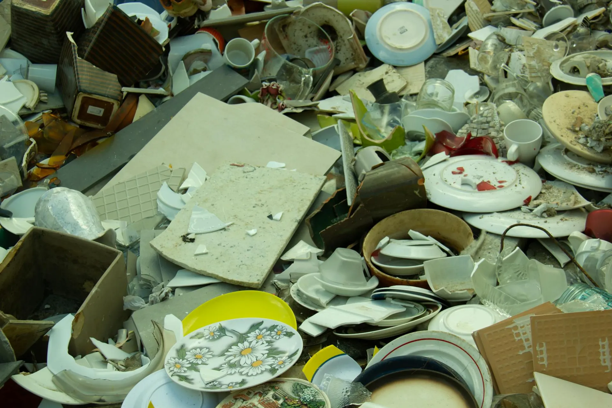

Three decades. Two continents. One ancient art.

Hiroshi Tanaka was born in Kyoto in 1962, the son of a ceramics trader who spent weekends walking the narrow lanes of Gion, collecting cracked teabowls and misshapen vases that the collectors had abandoned. His father kept them on shelves — not repaired, simply held. "He said broken things remember more," Hiroshi recalls. "I didn't understand until much later."
At twenty-three, Hiroshi entered the atelier of master lacquerer Kenji Mori, one of the last living practitioners of hon-urushi technique in the Muromachi tradition. He swept floors for six months before he was allowed to touch urushi. He mixed compounds for a year before he held a brush. In ten years of apprenticeship, he repaired fewer than forty pieces — each one a lesson that patience was not a virtue but the very material of the work.
"In kintsugi, you cannot rush the lacquer. You cannot rush the gold. You can only attend. The piece teaches you what it needs."
In 1994, he opened his first studio in Kyoto's Shimogamo district. In 2008, drawn by an invitation from the Victoria and Albert Museum, he moved to London — bringing with him the tools, the materials, and the unhurried rhythm of a practice that belongs to no particular century.
Hiroshi Tanaka is born in the Fushimi district of Kyoto, to a ceramics trader father and a calligrapher mother. His earliest memories are of shelves filled with imperfect vessels — each one kept for the stories it held.
Enters the atelier of Kenji Mori in Gion, Kyoto — one of the last masters of hon-urushi kintsugi technique. A decade of patient learning follows, including two years studying urushi lacquer cultivation in the Kishu region.
Receives certification from the Kyoto Traditional Crafts Council as a kintsugi master. Travels to Tokyo, Nara, and Osaka to study regional variations in gold application and urushi preparation.
Opens his first studio in Shimogamo district, Kyoto. The name WABI is chosen to honor the aesthetic at the heart of the practice — the beauty found in simplicity, imperfection, and impermanence.
Commissioned to restore three Song dynasty tea bowls for a private Japanese collection — the most significant work of his career to that date. The project takes fourteen months and changes his understanding of the relationship between gold and ceramic forever.
Invited by the Victoria and Albert Museum for a residency, Hiroshi relocates to London's Shoreditch. What was intended as a one-year visit becomes permanent. The London studio opens on Pottery Lane.
Launches private workshop programme, teaching the foundational techniques of kintsugi to individuals and small groups. The workshops sell out within hours of each release — a reflection of how hungry the world has become for slowness and repair.
Celebrates thirty years of WABI with an exhibition at the Barbican, London: "What Was Broken: A Kintsugi Retrospective." Over 500 restored pieces documented. Fourteen apprentices trained. The work continues.
The Japanese aesthetic tradition offers a vocabulary that English cannot quite match — words for the beauty in fading, in breaking, in the impermanence of all things. WABI is built on three of these words. Together, they form a complete philosophy of repair.
Wabi describes the beauty that exists in simplicity, rusticity, and imperfection. Not the beauty of the polished and the perfect, but the beauty of the worn threshold, the cracked glaze, the asymmetric bowl formed by imperfect hands. It is a resistance to the idea that beauty requires completion or correctness. The cracks in a tea bowl are not its flaw — they are its character, the visible record of its use and love.
Sabi is the beauty of time's passage — the patina on aged bronze, the fading of a colored glaze, the slight wobble of a vessel formed long ago. Where wabi finds beauty in simplicity, sabi finds it in transience. Things that have aged carry with them a particular kind of presence — the presence of time itself made visible. In kintsugi, we honor this age rather than erase it. We do not restore to new.
Kintsugi translates literally as "golden joinery" — the practice of repairing broken pottery with lacquer mixed with gold, silver, or platinum. But the meaning is larger than the technique. Kintsugi is a philosophical statement: that what has been broken is worthy of repair, that the repair should not be hidden but celebrated, and that the healed object carries more wisdom and beauty than the unbroken one ever could. The scar becomes the signature.
Often translated as "the pathos of things" — the wistful awareness of transience. A cherry blossom is most beautiful not despite its brief flowering but because of it. A cracked bowl is most precious not despite its damage but because the damage proves it was used, handled, loved. At WABI, we work within this tradition — making things that acknowledge rather than resist the passage of time.
We do not rush. The urushi cures in its own time. The gold is applied layer by layer. We believe the rate of repair is as important as the repair itself — that the process of attending carefully to a broken thing is itself an act of respect.
We refuse synthetic substitutes. Our urushi is harvested in Japan. Our gold is certified 24-karat. We believe the quality of repair depends on the quality of the materials used — and that the materials themselves carry meaning.
Every piece that arrives at WABI carries a story. We ask, and we listen. The history of an object — who made it, who used it, how it broke — shapes how we approach the repair. We document everything and return the story with the piece.
We exist in opposition to a culture of disposal. When something breaks, the default response is to discard. We offer an alternative — that repair is not merely practical but philosophical, and that the repaired object is more valuable than a new one.
Knowledge that is held dies with its holder. We are committed to teaching — through workshops, through apprenticeships, through documentation. The craft is alive only while it is being shared. We train each generation with the same patience we apply to the work.
Every repair we complete is guaranteed for the lifetime of the piece. If a gold seam fails, we restore it at no charge. This is not merely a commercial promise — it is a statement of confidence in our materials, our technique, and the durability of careful work.
Every crack is a potential seam. Every fracture is a future line of gold. We would be honored to restore what time and life have broken.